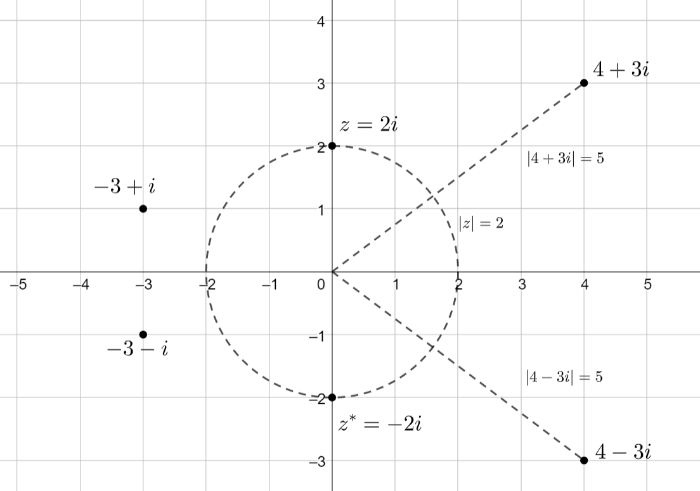

Kompleksiluvut
Contents
Kompleksiluvut#
Tässä luvussa tutustutaan kompleksiluvun käsitteeseen ja laskusääntöihin. Kompleksilukuja tarvitaan tällä opintojaksolla erityisesti toisen kertaluvun differentiaaliyhtälöiden ratkaisuissa.
Aiemmin kompleksilukuja on voinut tulla vastaan yhtälöissä, joille “ei löydy ratkaisua”. Esimerkiksi toisen asteen yhtälölle \(x^2-6x+13=0\) ei ole reaaliarvoista ratkaisua. Kuitenkin laskin saattaa antaa vastauksen \(x=3+2i\) ja \(3-2i\). Nämä ratkaisut ovat kompleksilukuja, jotka todella toteuttavat kyseisen yhtälön.
Ominaisuuksia#
Kompleksilukua merkitään \(z=x+yi\), missä \(x\) ja \(y\) ovat reaalilukuja, ja \(i\) on nimeltään imaginaariyksikkö. Imaginaariluvulla on ominaisuus \(i^2=-1\).
Kompleksiluku on siis summa reaaliosasta, jota merkitään \(\operatorname{Re}{z}\), ja imaginaariosasta \(\operatorname{Im}{z}\). Esimerkiksi luvun \(z=4+6i\) reaaliosa on \(\operatorname{Re}{z}=4\) ja imaginaariosa on \(\operatorname{Im}{z}=6i\). Joskus kompleksiluvussa saattaa olla pelkkä imaginaariosa.
Kompleksiluvut on kätevää esitellä ns. kompleksitasossa. Se on kaksiulotteinen koordinaatisto, jossa vaaka-akseli kuvaa luvun reaaliosaa ja pystyakseli imaginaariosaa. Kompleksilukuja ei voi asetella peräkkäin suuruusjärjestykseen kuten reaalilukuja, mutta kompleksiluvulle \(z=x+yi\) voidaan laskea itseisarvo \(|z|\). Laskutapa on sama kuin silloin kun lasketaan koordinaatistossa olevan pisteen \((x,y)\) etäisyys origosta:
\(|z|=\sqrt{x^2+y^2}\)
Sama itseisarvo on äärettömän monella kompleksiluvulla. Itseisarvoa voi ajatella ympyrän säteenä. Kaikki kompleksiluvut, joiden sijainti koordinaatistossa osuu saman ympyrän kehälle, ovat yhtä kaukana origosta eli niillä on sama itseisarvo.
Kompleksiluvun \(z\) kompleksikonjugaatti eli liittoluku \(z^*\) tarkoittaa lukua, jossa reaaliosa on sama, mutta imaginaariyksikkö on peilautunut vastakkaismerkkisesti. Luvun \(z=x+yi\) kompleksikonjugaatti on siis \(z^*=x-yi\).
Seuraavassa kuvassa on esitetty muutamia kompleksilukuja, kompleksikonjugaatteja ja itseisarvoja kompleksitasossa.

Esimerkki
a) Laske luvun \(z=3+2i\) itseisarvo. Laske myös sen kompleksikonjugaatin itseisarvo.
b) Mikä pitäisi olla vakion \(x\), että luvun \(x-2i\) itseisarvo olisi 8?
Ratkaisu
a) \(|z|=\sqrt{3^2+2^2}=\sqrt{9+4}=\sqrt{13}\)
\(|z^*|=\sqrt{3^2+(-2)^2}=\sqrt{9+4}=\sqrt{13}\)
Yleisestikin \(|z|=|z^*|\), sillä summan \(a^2+b^2\) suuruus ei riipu lukujen \(a\) ja \(b\) etumerkeistä.
b) Luvun itseisarvo on \(\sqrt{x^2+(-2)^2}=10\), joten saadaan yhtälö
\(x^2+(-2)^2=10^2 \Leftrightarrow x^2+4=100 \Leftrightarrow x^2=96\)
Tästä ratkeaa \(x=\pm \sqrt{96}\) tai toisin esitettynä \(x=\pm 4\sqrt{6}\).
Laskusääntöjä#
Kompleksilukuja voidaan laskea yhteen, vähentää toisistaan, kertoa vakiolla ja kertoa toisillaan samoilla laskusäännöillä kuin polynomeja. Laskujen sievennyksessä on huomioitava, että \(i^2=-1\). Lopputulos esitetään reaali- ja imaginaariosan summana.
Esimerkki
Laske luvuilla \(a=3+2i\) ja \(b=4-5i\) laskut:
a) \(a+b\), b) \(a-b\), c) \(2a+3b\), d) \(ab\)
Ratkaisu
a) \(a+b = 3+2i + 4-5i = (3+4)+(2-5)i = 7-3i\)
b) \(a-b= 3+2i - (4-5i) = 3+2i-4+5i=(3-4)+(2+5)i = -1+7i\)
c) \(2a+3b=2(3+2i)+3(4-5i)\)
\( = 6+4i+12-15i = (6+12)+(4-15)i=18-11i\)
d) \((3+2i)(4-5i)=3\cdot 4 +3\cdot (-5i)+2i\cdot 4 + 2i \cdot (-5i) \)
\(=12-15i+8i-10i^2 = 12-15i+8i-10\cdot (-1) \)
\(= 12-15i+8i+10 = (12+10)+(-15+8)i = 22-7i \)
Kompleksilukujen osamääränkin \(\frac{z_1}{z_2}\) laskussa tavoitteena on esitysmuoto \(x+yi\). Tähän esitysmuotoon päästään laventamalla jakolasku nimittäjän \(z_2\) kompleksikonjugaatilla \(z_2^*\). Tällöin nimittäjästi tulee reaaliluku, jolla voidaan jakaa osoittajan reaaliosa ja imaginaariosa erikseen.
Esimerkki
Laske jakolasku \(\frac{z_1}{z_2}\), kun \(z_1=3+2i\) ja \(z_2=1+4i\).
Ratkaisu
\(\Large{\frac{z_1}{z_2}=\frac{z_1z_2^*}{z_2 z_2^*}} \)
\(\Large{\frac{z_1}{z_2}=\frac{(3+2i)(1+4i)}{(1+4i)(1-4i)} }\)
\(\Large{\frac{z_1}{z_2}=\frac{3\cdot 1 + 3 \cdot 4i+2i\cdot 1 + 2i\cdot 4i}{1\cdot 1 + 1 \cdot (-4i)+4i\cdot 1 + 4i\cdot (-4i)}}\)
\(\Large{\frac{z_1}{z_2}=\frac{3\cdot 1 + 3 \cdot 4i+2i\cdot 1 + 2i\cdot 4i}{1\cdot 1 + 1 \cdot (-4i)+4i\cdot 1 + 4i\cdot (-4i)}}\)
\(\Large{\frac{z_1}{z_2}=\frac{3 + 12i+2i + 8i^2}{1-4i+4i 16i^2}}\)
\(\Large{\frac{z_1}{z_2}=\frac{3 + 14i + 8i^2}{1-16i^2}}\)
\(\Large{\frac{z_1}{z_2}=\frac{3 + 14i - 8}{1+16}}\)
\(\Large{\frac{z_1}{z_2}=\frac{-11 + 14i}{17}}\)
\(\Large{\frac{z_1}{z_2}=-\frac{11}{17} + \frac{14}{17}i}\)
Reaaliosien jakaminen keskenään ja imaginaariosien jakaminen keskenään ei ole kompleksilukujen jakolaskua. Laske huviksesi \(\frac{\operatorname{Re}{z_1}}{\operatorname{Re}{z_2}}\) ja \(\frac{\operatorname{Im}{z_1}}{\operatorname{Im}{z_2}}\). Sen jälkeen unohda, että olet koskaan tällaisen laskun laskenut.
Kompleksilukujen potenssiinkorotus summamuodossa esitettynä on hankalaa, sillä pelkillä reaaliluvuillakin binomien potensseista tulee hyvin pitkiä laskuja (poikkeuksena korotus potenssiin 2). Seuraavassa luvussa opetellaan kompleksilukujen toiseen esitysmuotoon perustuvia laskusääntöjä. Pelkän imaginaariosan potenssit tuottavat lukuja \(\pm 1\) ja \(\pm i\):
\(i^2= - 1\),
\(i^3=i\cdot i^2 = i\dot (-1) = -i\),
\(i^4=i\cdot i^3 = i \cdot (-i)=-i^2=-(-1)=1\),
\(i^5=i\cdot i^4 = i\cdot 1 = i, \dots\)
Imaginaariyksikön potenssilaskuissa tarvitaan normaaleja potenssilaskusääntöjä. Esimerkiksi lasku \((2i)^7\) puretaan ensin muotoon \(2^7 i^7\) ja tästä pääsee eteenpäin tulon potenssin avulla, esimerkiksi \(2^7 i^{2+2+2+1}=2^7 \cdot i^2 \cdot i^2 \cdot i^2 \cdot i=2^7 \cdot (-1) \cdot (-1) \cdot (-1) \cdot i = -2^7 i = -128 i\).
Kaksi kompleksilukua ovat samat, jos niiden reaaliosat ovat keskenään samat ja imaginaariosat keskenään samat. Tätä tietoa hyödyntämällä voi ratkaista myös yhtälöjä, joissa on mukana kompleksilukuja. On huomattava, että kahden erisuuruisen kompleksiluvun itseisarvot voivat olla samat. Kyseessä eivät silti ole samat luvut. Näinhän on myös reaaliluvuilla.
Esimerkki
Ratkaise kompleksiluku \(z=x+yi\) yhtälöstä \(2z+3i=6-2i\).
Ratkaisu
Sijoitetaan tuntematon luku yhtälöön ja sievennetään:
\(2(x+yi)+3i=6-2i \)
\(2x+2yi+3i=6-2i\)
\(2x+(2y+3)=6-2i\)
Vertaamalla reaali- ja imaginaaria keskenään saadaan yhtälöpari
\(\begin{equation}\begin{cases} 2x=6 \\ 2y+3=-2\end{cases}\end{equation}\)
Ensimmäisestä yhtälöstä ratkeaa \(x=3\) ja toisesta yhtälöstä \(y=-\frac{5}{2}\). Kysytty luku on siis \(z=3-\frac{5}{2}i\).
Esimerkki
Ratkaise kompleksiluku \(z=x+yi\) yhtälöstä \((3+2i)z=5+i\)
Ratkaisu
Sijoitetaan tuntematon yhtälöön ja sievennetään vasen puoli:
\((3+2i)(x+yi)=5+i\)
\(3x+3yi+2xi+2yi^2=5+i\)
\(3x+3yi+2xi+2y\cdot(-1)=5+i\)
\(3x+3yi+2xi-2y=5+i\)
\(3x-2y+(3y+2x)i=5+i\)
\(3x-2y+(2x+3y)i=5+i\)
Verrataan reaaliosia keskenään ja imaginaariosia keskenään, jolloin saadaan yhtälöpari
\(\begin{equation}\begin{cases}3x+y=5\\2x+3y=1\end{cases}\end{equation}\)
Yhtälöpari voidaan ratkaista esimerkiksi sijoitusmenetelmällä. Ensimmäisestä yhtälöstä saadaan \(y=5-3x\). Sijoitetaan se jälkimmäiseen yhtälöön:
\(2x+3(5-3x)=1\)
\(2x+15-9x=1\)
\(-7x=-14\)
\(x=2\)
Tämän avulla saadaan ratkaisua \(y=5-3\cdot 2 = 5-6=-1\). Ratkaisuksi löydettiin siis kompleksiluku \(z=2-i\).